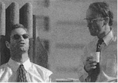

Contents | Features | Reviews | News | Archives | Store

Contents | Features | Reviews | News | Archives | Store
You know the end of SIFF is near when more sightings of Darryl become as common as mud, as he beseeches (reproaches?) everyone to make their final decisions on which lucky individuals and/or films get to walk away with the Golden Space Needle awards. Here’s the list:
The Full-Series-Pass Holders’ award for favorite film went to Peter Cattanero’s film, The Full Monty, which was hardly a surprise, given the film’s vast audience appeal and relevant social themes.
As for the themes that prevailed at this year’s SIFF, the festival seemed to be awash in suburban psychodrama (a.k.a. "Yuppies and Gen X in Crisis") and many of them shared the dubious honour of being some of the worst hours of cinema ever created. It required a suspension of reality bordering on psychosis to endure such muck as One of those Nights, the execrable self-indulgence of Fall and the banality of The Headhunter’s Sister (despite the incredible performance of Bob McGrath). When viewed under the serial conditions that prevail in any film festival, the films’ flaws became even more apparent, since memories were still quite sharp. While no one denies the rather deleterious effects that repetitive screenings have on the critical faculties (and, by the end, everything I saw did tend to meld into a "metafilm"), one gets a sense that many contemporary filmmakers are working in a cultural vacuum; much of the dialogue and situations in these films can be described as interchangeable and the uniqueness of dysfunctional families and/or relationships wears tragically thin after the ten viewing.
On a happier note, one director who won’t be subject to the above-mentioned tirade is Neil Labute. His film, In the Company of Men, is a nastily brilliant piece of work. Starting out as a revenge fantasy concocted by two "dead white men" against a hearing-impaired woman who is meant to stand in for every woman who has ever hurt them, Company soon becomes something altogether different, and then transforms itself one more time during its last sequence; the latter will have you gasping in mixed admiration and horror at the audacity of one of the characters and the innovative mindset of director/screenwriter Labute. To describe the scenario more thoroughly than this is to give the game away, and the film deserves to be seen to be understood. Company caused a controversy at Sundance, where it won the Filmmaker’s Trophy for Drama, ostensibly because of the psychological abuse meted out to someone with a disability. Those who look at this film in this fashion, unfortunately, will only come away with half the points that Labute is trying to make about loyalty and trust. Put another way, Company should be required viewing at every business school in the country, because it illustrates the danger of carelessly assigning those two qualities to just anyone in a world where competition can bring out the worst in the worst.
Speaking of bringing out the worst in the worst, Arthur Dong’s Licensed to Kill has to be singled out for further consideration. As noted earlier, it won a well-deserved Space Needle Award for Best Documentary, and what a document of irrational hatred it is. Dong, a victim of a gay-bashing some seventeen years earlier, decided to interview some of the men who are convicted of hate crimes against gays, no doubt as a means of coming to terms with the memories of the crime. Dong sent out approximately forty letters and received twenty agreements to talk (Dong also tried to interview the few women who have been involved in gay-bashings, but all of them refused to speak on the subject). From this cross-section, Dong then interviewed eight of the convicts, never telling them that he himself was gay. The overall effect of this film is alternately surprising and not surprising, as Dong challenges his own perceptions of the perpetrators, and as some of them refuse to accept the iniquity of their earlier behavior. In the latter category one encounters the stereotypical white good-ol’-boy, who informs Dong, with a chilling smile, that gays have to be "taken care of." However, there is also the African-American who indulged in gay-bashing for profit, not unlike the process of "rolling" a well-dressed drunk. Then we encounter the relatively well-educated African-American who killed a gay man because he was also gay, but closeted, and fearful of being detected. Despite their obvious differences, all of these offenders do justify their actions due to what they perceive to be the "weakness" of gays; if someone beats a gay man (or a lesbian), it is assumed that the gay individual will be too ashamed to come forward and testify, or, even if he does, no one from the "normal" world will take the crime seriously. The real bottom line here has to do with emotionally-weak men who project their fantasies onto individuals who can be terrorized, and/or murdered, with impunity. The concept of marginalization inviting victimization is, sadly not new, but Dong’s documentary deftly reconfigures the grimly familiar scenario by allowing the victimizers to tell their stories in parallel. By doing so, Dong reiterates the need to understand the dreary yet inescapable fact that if one group in society is unsafe, everyone else is as well.
The closing night film, Mrs. Brown, proved to be an
elegant and straightforward, if somewhat slow-moving, look at the bittersweet
romance-from-afar that developed between Queen Victoria (Judi Dench) and John Brown (Billy
Connolly) following the death of Prince Albert.  Brought in by the Queen’s
household staff to put a stop to her protracted mourning, Brown soon proves to be a worthy
adversary, both useful and dangerous. He does indeed succeed in shaking the Queen loose
from her blue funk, but also succeeds in antagonizing the household staff, some of the
Queen’s ministers, and soon inspires the enmity of the Prince of Wales, who becomes
jealous of Brown’s influence over his mother. The mutual attraction between Brown and
the Queen soon has more serious consequences, as Republicans, angered over the
Queen’s seeming indifference to her subjects and rumors of a presumed lack of
propriety, begin calling for the abolition of the monarchy (does this sound familiar?).
Comedian Connolly (best known in this country for his short-lived comedy series, Billy) is
very effective in conveying both the bluster and the vulnerability of this person cast
adrift in a world of hidden but very intractable traditions and rules, while Dench manages
to make Her Majesty seem more than a synonym for prudishness. Most inspiring, however, is
Anthony Sher , (also seen at SIFF in Alive
and Kicking) in the role of Prime Minister Benjamin Disraeli. Sher deftly displays
the sly wit and powerful intelligence that kept Disraeli one step ahead of a snobbish and
often anti-Semitic nobility and society. The overall feel of the film is very much like a
higher-class version of a Masterpiece Theatre episode (indeed, MT is listed
in the producers’ credits), and it will probably make its appearance there before
long, if it hasn’t done so already.
Brought in by the Queen’s
household staff to put a stop to her protracted mourning, Brown soon proves to be a worthy
adversary, both useful and dangerous. He does indeed succeed in shaking the Queen loose
from her blue funk, but also succeeds in antagonizing the household staff, some of the
Queen’s ministers, and soon inspires the enmity of the Prince of Wales, who becomes
jealous of Brown’s influence over his mother. The mutual attraction between Brown and
the Queen soon has more serious consequences, as Republicans, angered over the
Queen’s seeming indifference to her subjects and rumors of a presumed lack of
propriety, begin calling for the abolition of the monarchy (does this sound familiar?).
Comedian Connolly (best known in this country for his short-lived comedy series, Billy) is
very effective in conveying both the bluster and the vulnerability of this person cast
adrift in a world of hidden but very intractable traditions and rules, while Dench manages
to make Her Majesty seem more than a synonym for prudishness. Most inspiring, however, is
Anthony Sher , (also seen at SIFF in Alive
and Kicking) in the role of Prime Minister Benjamin Disraeli. Sher deftly displays
the sly wit and powerful intelligence that kept Disraeli one step ahead of a snobbish and
often anti-Semitic nobility and society. The overall feel of the film is very much like a
higher-class version of a Masterpiece Theatre episode (indeed, MT is listed
in the producers’ credits), and it will probably make its appearance there before
long, if it hasn’t done so already.
Best of SIFF:
Worst of SIFF:
Contents | Features | Reviews | News | Archives | Store
Copyright © 1999 by Nitrate Productions, Inc. All Rights Reserved.